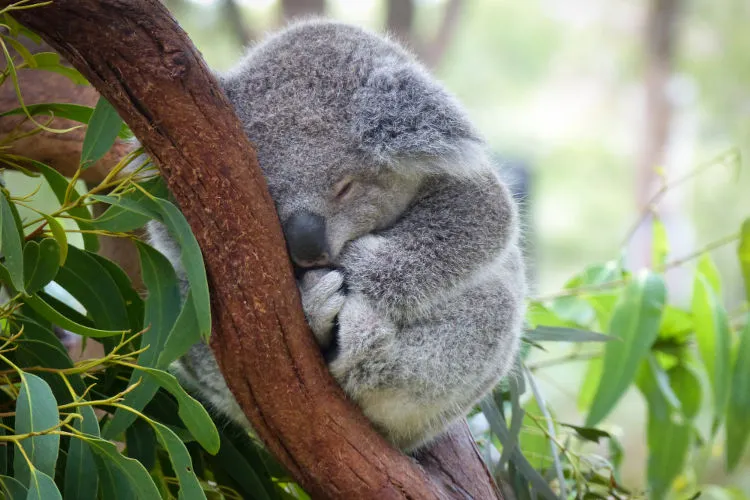

Onde vivem os coalas?
Os coalas são animais que habitam exclusivamente a Austrália. Eles preferem áreas florestais com grande presença de árvores de eucalipto, pois essas árvores não só oferecem abrigo, mas também fornecem seu principal alimento. Estes animais são arborícolas, o que significa que passam a maior parte do tempo em galhos de árvores. O eucalipto é fundamental não só para sua alimentação, mas também para seu descanso e proteção contra predado. No entanto, o habitat dos coalas está sendo ameaçado pela destruição de florestas e desmatamento, colocando a espécie em risco.
Os coalas são marsupiais que só são encontrados na Austrália, dependendo do sítio onde vivem a sua pelagem adapta-se, nos eucaliptais tropicais do norte a sua pelagem é mais curta acinzentada, e nos eucaliptais temperados do sul a sua pelagem é mais longa e castanha. A sua localização deve-se à separação entre aquele continente e outras massas terrestres antes que os mamíferos placentários pudessem se estabelecer ali. O coala acabou por ser vítima da caça e da destruição do seu habitat florestal. Antes da chegada do colonizadores europeus, em finais do século XVII, este marsupial ocupava uma superfície três vezes mais vasta do que a atual. Este animal foi recentemente introduzido ou reintroduzido em algumas ilhas perto da costa, bem como no interior do país. Estas novas populações foram o fruto de estudos científicos que deram valiosa contribuição para o conhecimento dos comportamentos da espécie.
